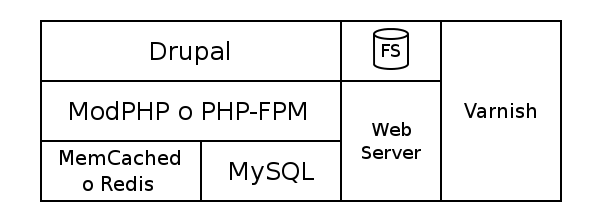

Como mejorar la performance en Drupal
¿Quien soy yo?
- Ignacio J. Bonelli (Ingeniero en Electrónica)
- Casi toda mi carrera profesional trabajando en sistemas
- Trabajo para Tincan (DrupalShop UK)
- Docente de Informática1 en la UTN (programación en C)
- Fan de Linux y el Opensource
- Padre de dos
- Fan de todo lo referente a SciFi
- Deporte! Correr, nadar y remar.
Y en mis tiempos libres:
Mas sobre mi y contacto: www.nachodigital.com.ar
¿Como mejorar
la performance en Drupal?
- Drupal's cache
- Otros proyectos opensource al rescate:
- APC: Advance PHP Caching
- Memcache/Redis
- Varnish
Drupal's Stack (I)
Todo en una máquina:
- Intel Xeon 3.5GHz (QuadCore MT)
- 8GB RAM y SSD Disk
Drupal's Stack (II)
Drupal's Stack (III)
Tráfico Anónimo vs LoggedIn
- Tráfico Anónimo:
- Nada cambia: Podemos cachear la página entera
- Así podemos evitar el webserver por completo (Varnish/nginxCacheProxy)
- LoggedIn:
- Algunas cosas no cambian (xej. blocks caching)
- Mejorar la velocidad de generación de la página
- Es importante hacer cosas para:
- Acceder a los datos mas rápido (Memcached/Redis)
- Correr el código mas rápido (APC)
Caching
Cosas a cachear:
- Archivos estáticos en la nube (CDN/S3)
- Código PHP compilado (APC)
- Resultados de pedidos a la DB (MySQL cache)
- Variables y datos ya procesados (Memcached/Redis)
- Páginas completas generadas (Boost/Varnish)
- Partes de páginas o modulos (Views/Panels)
El cache que viene con Drupal
- Manejo de cache integrado:
Configuration -> Development -> Performance - Debemos deshabilitar los modulos que no usamos
- Configurar cron en el server (vs. poorsman's cron)
- Configuración del cache de Views y Panels
- DBlog vs Syslog
- MongoDB para cache, session...
Configuración del cache de Drupal (I)
¿Cada 1h? ¿Cada 3hs? ¿Cada 6hs?
Y si hago "drush cc all" una vez al día?
Configuración del cache de Drupal (II)
drush cc
Enter a number to choose which cache to clear.
[0] : Cancel
[1] : all
[2] : drush
[3] : theme-registry
[4] : menu
[5] : css-js
[6] : block
[7] : module-list
[8] : theme-list
[9] : registry
[10] : views
Articulos sobre blocks y views: Pantheon y Millwood blog
Modulos que pueden mejorar la performance
Modulos que podemos usar:
Principio KISS
- Mas modulos = Mas complejidad
- Mas complejidad... No aconsejable!
- Mejor: APC, Memcached, y Varnish!
Drupal7 vs Drupal8
Articulos:
- Drupal 8 now has page caching enabled by default
- Making Drupal 8 fly
- Drupal 7 vs Drupal 8 Performance Comparison
- Drupal 7.39 VS Drupal 8 RC1 Performance
En resumen: ¡Mucho mas rápido!
¿Nginx o Apache? (I)
¿Nginx o Apache? (II)
En resumen:
- Yo uso apache mas que nada por legacy y compatibilidad
- Para PHP parece que Nginx anda mejor (test)
- Articulos:
- Anturis (Cloud-Based Monitoring)
- DigitalOcean (Simple Cloud Hosting)
- nginx
Varnish (I)
- Pensado 100% para caching
- Hecho en C (rápido!)
- Configuración compilada (modificando funciones)
- Puede usar para el cache memoria o disco
- Backend (CLI) para manejarlo:
varnishadm -T 127.0.0.1:6082 url.purge .
- Stats: varnishstat, varnishtop, varnishhist...
- Modulo Drupal para controlar Varnish (incluye links a ejemplos de configuración para Drupal)
Varnish (II)
Otras opciones de cache: Squid o Nginx.
Pero, Varnish está especialmente diseñado para esto.
Como controlar el cache:
Ej. de configuración: DigitalOcean y varnish-cache.org
¿Caching SSL?
Por que Varnish no soporta SSL (ni va a soportarlo)
APC
- Alternative PHP Cache (APC)
- Como PHP es interpretado, esto hace caching del "opcode" resultante del PHP
En Debian/ubuntu es tan simple como:
$ sudo apt-get install php-apc
¡También es útil en ambientes locales!
Reportes de APC
Memcached
¿O por que cachear en DB cuando tenemos memoria?
- Es un server aparte (como Varnish)
- Almacenamiento Key-Value en memoria
En Debian/ubuntu es tan simple como:
$ sudo apt-get install memcached
Se necesita un módulo para integrarlo con
Drupal's Cache API: Memcache API and Integration
Reportes de Memcached

Configurando Memcached
Agregar al final del settings.php:
# memcache config
$conf['cache_backends'][] = './sites/misitio/modules/memcache/memcache.inc';
$conf['cache_default_class'] = 'MemCacheDrupal';
$conf['cache_class_cache_form'] = 'DrupalDatabaseCache';
$conf['memcache_key_prefix'] = 'misitio-env';
Drupal's cache API:
Drupal 7 cache bins y Caching Data in Drupal 7
APC, Memcached y
Drupal cache bins
APC también permite guardar data de usuario (DrupalAPC)
// Backends
$conf['cache_backends'][] = 'sites/all/modules/apc/drupal_apc_cache.inc';
$conf['cache_backends'][] = 'sites/all/modules/memcache/memcache.inc';
// Bins
$conf['cache_default_class'] = 'MemCacheDrupal'; // General purpose.
$conf['cache_class_cache'] = 'DrupalAPCCache'; // Small, hit frequently.
$conf['cache_class_cache_bootstrap'] = 'DrupalAPCCache'; // Small, hit frequently.
// The 'cache_form' bin must be assigned no non-volatile storage.
$conf['cache_class_cache_form'] = 'DrupalDatabaseCache'; // Non-volatile.
¿Memcached vs Redis?
- Muchas razones para usar uno u otro:
- Memcached:
- Baja complejidad, solo hace bien una cosa.
- Diseño muy estable y probado
- No soporta clustering
- Redis:
- Mas funciones (no solo key-Value)
- Ahora misma performance que Memcached para key-Value
- Mucha mas funcionalidad...
- Memcached:
Probando la performance
Dos formas:
- En producción, largo plazo
- Munin: RAM, WebServer, etc...
- Webdruid: WebServer+Varnish logs
- WebStats:
- Stress tests puntuales
- ApacheBench, Siege, WRK.
- sar (System Activity Report): Debian, Gráficos y un articulo
- XHProf (PHP Hierarchical Profiler), su módulo para Drupal e introducción
curl -o /dev/null -w %{time_total} -k midominio.com 2>/dev/null
Munin y WebStats:

{kind=link}
{kind=link}
{kind=link}
{kind=link}
{kind=link}
{kind=link}
{kind=link}
{kind=link}
{kind=link}
Servicios OnLine
- Análisis: NewRelic (simpler than xhprof)
- Stress test: Load Storm y Loader
- Static assets:
- CloudFront, CDN, otros...
- Amazon S3 o usar un "Media" server
- Cloudflare:
- Servicio general
- Integración con Drupal (servicio caching)
- Cloudflare Purge y Cache Expiration
(para usarlo tipo Varnish)
Y del lado del web browser:
YSlow o GTmetrix
{kind=link}
{kind=link}
Módulos de apache que ayudan: Expire y Deflate
Otros servicio similar (online): Google Page Speed
Todo esto para poder...
¡Correr Drupal en un RaspberryPi Stack!
{kind=link}
Algo para el camino...
- Drupalcon 2014 Austin:
The caching deep dive (Blog + YouTube + VM) - Drupalcon 2013 Portland:
Performance testing (Slides + YouTube) - Drupalcon 2014 Austin:
Planning for performance (Slides + YouTube) - Drupal community docs: Caching to improve performance
- D7 Performance Optimization Options & Checklist
- Usando Doctrine cache en Drupal 7 (coding)